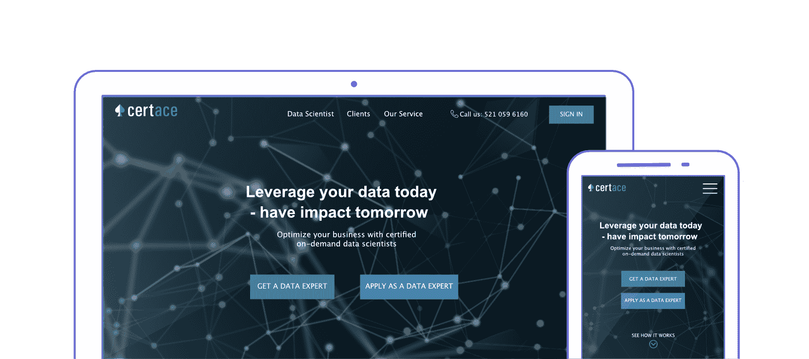
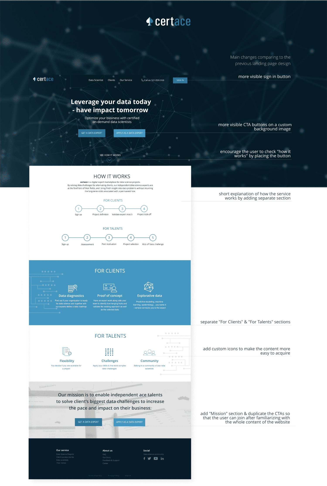
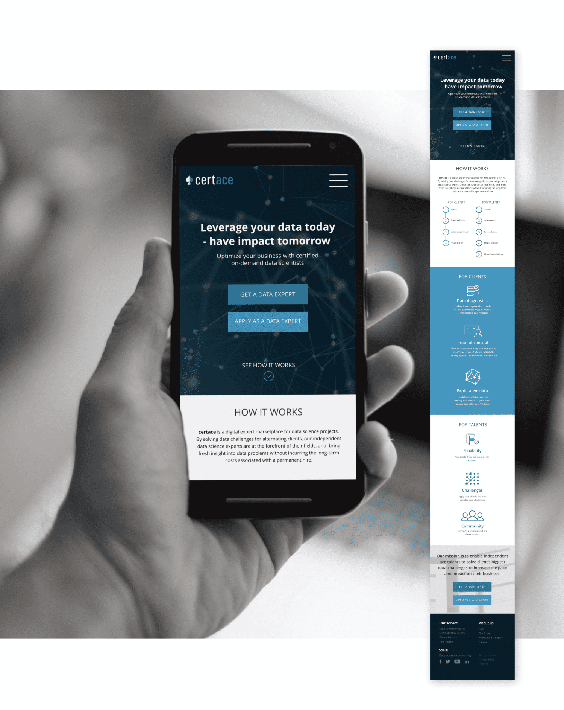
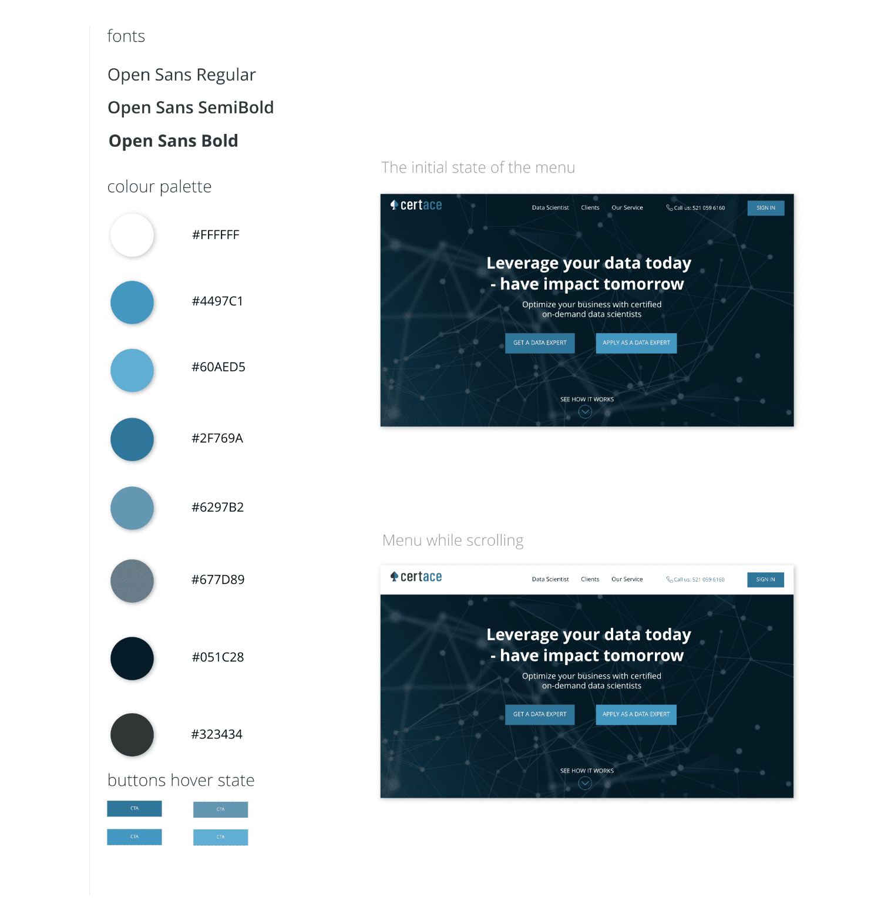
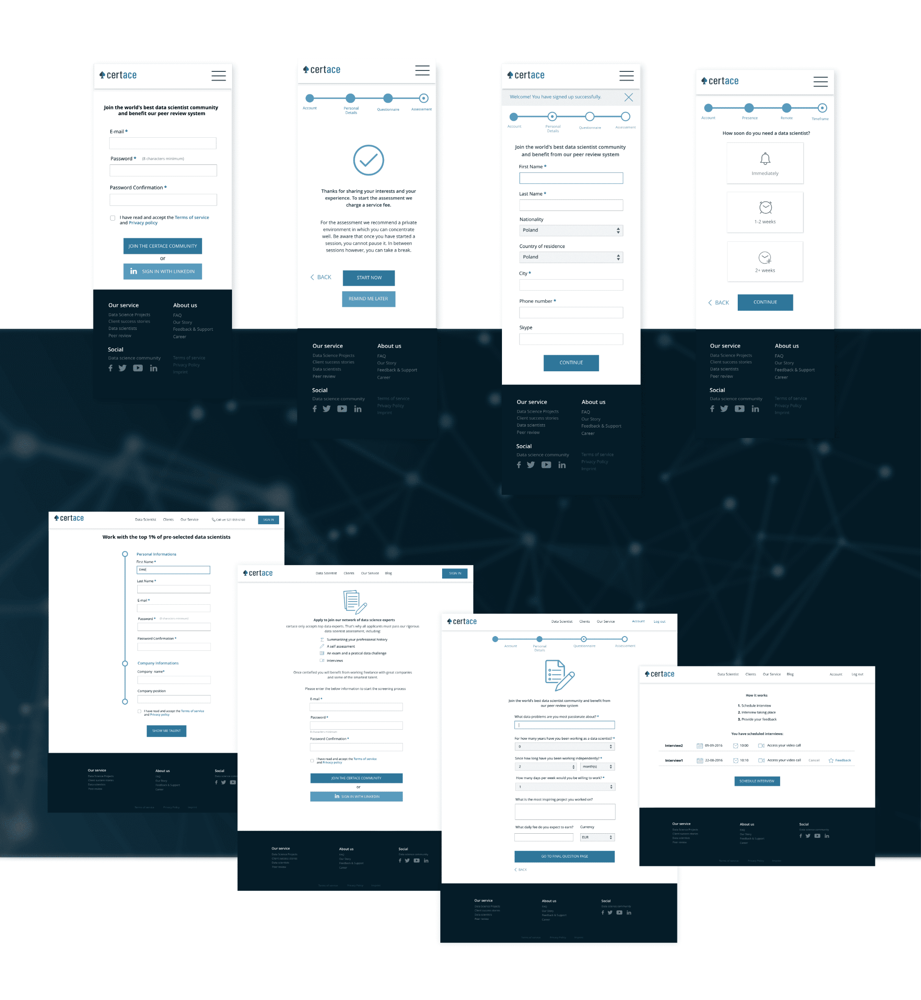
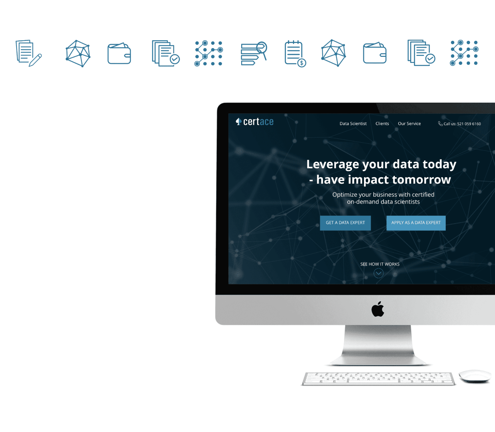

Challenges
Certace is a digital expert marketplace for data science projects that matches data experts with clients. The main goal was to redesign the existing layout of the landing page and applications screens with the special care about the user experience both on the desktop and mobile devices.

Solutions
On the landing page:
- explain how the application works and show the process both for clients & experts
- show the benefits separately for clients and experts
- include the business goal
- design custom hero graphic & icons associated with the new technologies & data science
- put the special impact on Call To Action buttons
- making everything readable & understandable by taking care of the clean design
- compose the calm color palette referring to logo and industry
On the App screens:
- design custom icons so that the user can immediately associate the particular layout feature with the corresponding action
- group the inputs in the forms thematically
- include the business goal
- show the signup process on top indicator bar
- design self-assessment forms in a simple clean way to avoid unnecessary confusion
Tools used
Affity Designer / Affinity Photo / Pivotal Tracker / sketchbook




